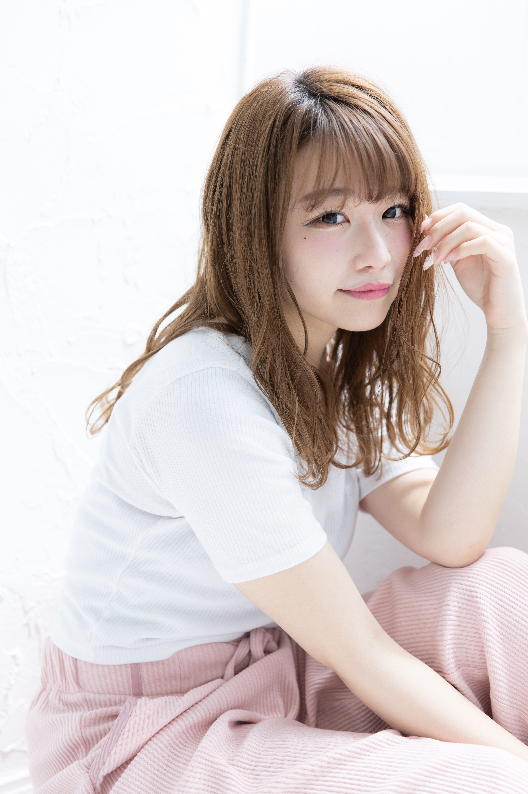
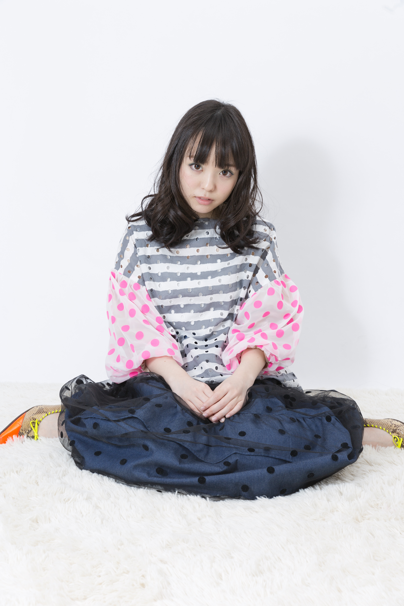
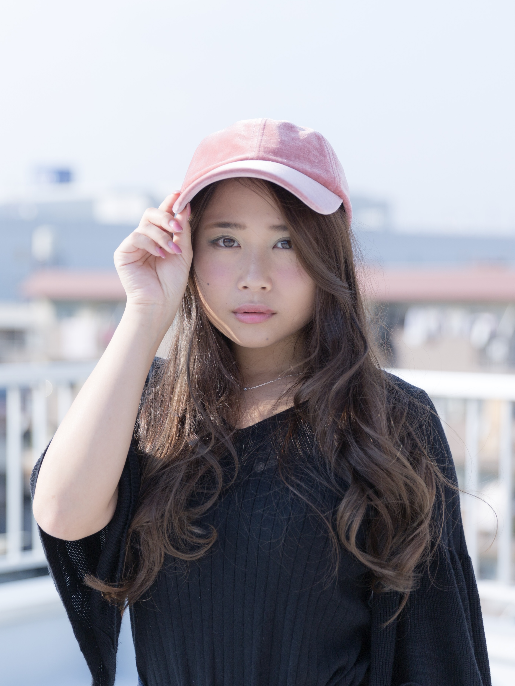
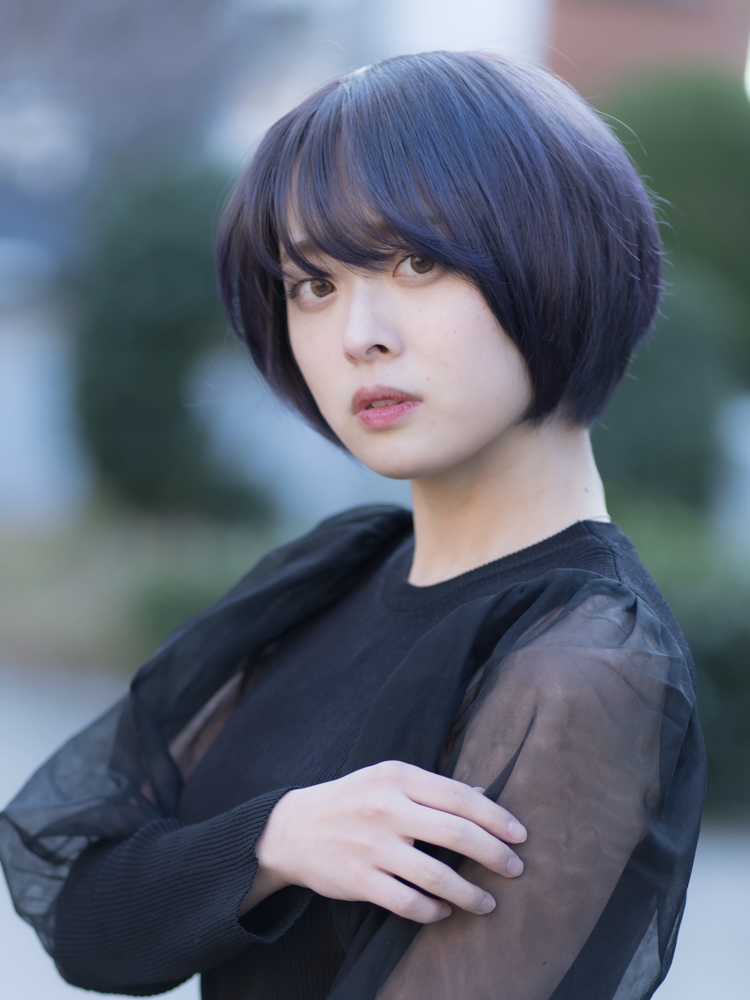
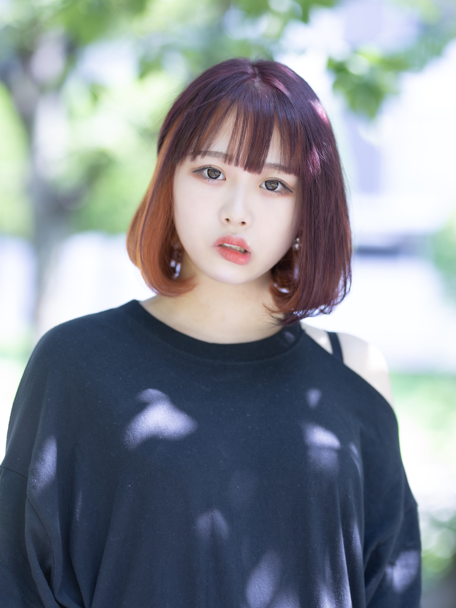
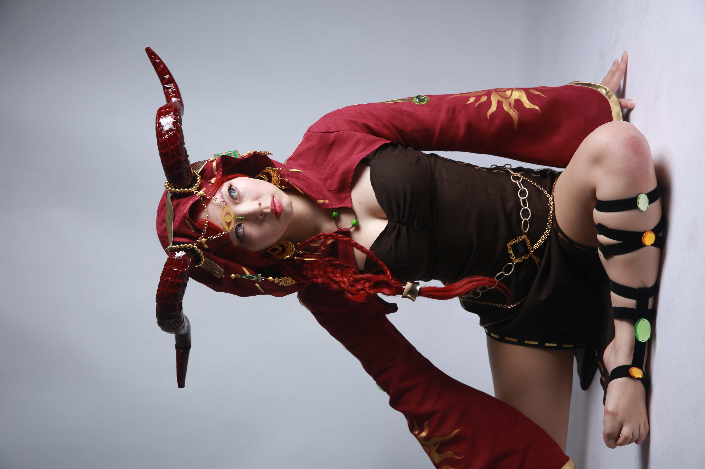

【カタログ掲載実績：Yohji Yamamoto s'yte】
京都の路地裏にて、ブランドの世界観を「通せんぼ」という大胆なポージングで表現。ストリートの空気感と構図の妙が評価され、公式カタログに採用されました。
Scroll to Explore
京都の路地裏にて、ブランドの世界観を「通せんぼ」という大胆なポージングで表現。ストリートの空気感と構図の妙が評価され、公式カタログに採用されました。

白い木々が印象的なスタジオにて、80年代のファッション誌のような力強いコントラストを意識。ヘアスタイルと衣装の質感を際立たせるライティングにこだわりました。

自然光が降り注ぐスタジオでのサロンスタイル撮影。被写体本来の美しさを引き出すため、あえて作り込みすぎず、透明感のある仕上がりを追求しました。

アパレルブランド「Design note」の依頼により、モデル選定からディレクションまで担当。ストロボを用いた正確な描写で、デザイナーの意図を忠実に形にしました。

店舗屋上にて、秋の空と秋色ヘアをマッチング。強風という悪条件の中、一瞬の静止を狙い撃つ集中力で、物語性を感じる一枚を切り出しました。

85mm単焦点レンズの開放F値を活かし、背景を大胆に整理。公園という公共の場でありながら、ノイズを排除し、ダークバイオレットの髪色とモデルの表情を際立たせています。

真夏の強い木漏れ日の中、レンズフィルターを駆使して白飛びを制御。鮮やかなヘアカラーを損なうことなく、季節感あふれる柔らかな描写を実現しました。

シルバーグレーという繊細な髪色を正確に記録するため、定常光（LED）を選択。ストロボでは捉えにくい微細な色のニュアンスを、視覚的に追い込みながら撮影しました。

人気ゲーム「第五人格」のキャラクター撮影。単なる模倣ではなく、キャラクターの背景を理解した上でストロボワークを組み、没入感のある世界を表現しました。

ランタンフェスティバルの灯りを活かした夜景撮影。スカジャンというストリートな要素と、幻想的な光を融合させ、エモく、重厚感のある一枚に仕上げました。
フォトグラファーとしてのキャリアは15年に及びます。
長年のサロンマネジメント経験を活かし、被写体の魅力を引き出すだけでなく、ディレクションやコンセプト設計から関わる撮影を得意としています。
光と影のコントロール、そして被写体とのコミュニケーションを通じて、物語性のある一枚を追求し続けています。